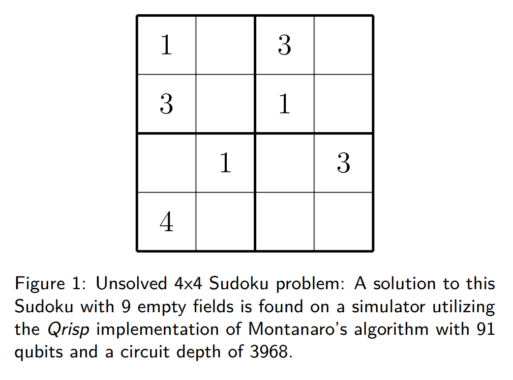
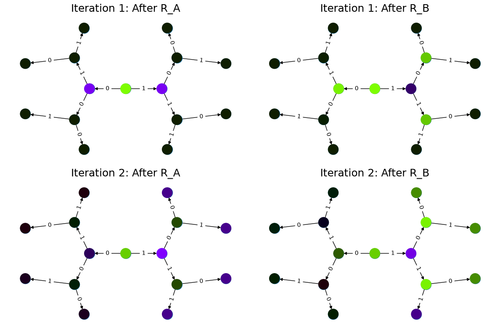

Solving Sudoku using Quantum Backtracking#
This tutorial is the practical hands on-part of this paper.
Sudoku#
Sudoku is a popular logic-based puzzle game that gained widespread popularity in the late 20th century. Its name, “Sudoku,” originates from the Japanese words “su” (meaning “number”) and “doku” (meaning “single”). The puzzle consists of a grid typically composed of nine rows, nine columns, and nine smaller subgrids known as “regions” or “blocks.”
The objective of Sudoku is simple: fill in the grid so that each row, column, and region contains the numbers 1 through 9, with no repetition. A partially completed grid is provided, with some numbers already filled in. The challenge lies in using deductive reasoning and logic to determine the correct placement of numbers within the grid.
Sudoku puzzles come in various difficulty levels, ranging from easy to extremely challenging, based on the number and placement of initial clues provided. While the rules remain consistent, the complexity of solving the puzzle increases with fewer initial clues and the necessity for more advanced solving strategies.
Over the years, Sudoku has evolved into a beloved pastime for enthusiasts of all ages, offering a stimulating mental exercise that promotes concentration, critical thinking, and problem-solving skills. Whether played casually in newspapers, puzzle books, or digital platforms, Sudoku continues to captivate individuals worldwide with its timeless appeal.
In our case, we will be working with 4x4 Sudoku mostly because we want to keep the results still simulable. A 9x9 or even 16x16 implementation would of course work equally well.

Backtracking#
As they fall into the category of constraint satisfaction problems, Sudokus are (in a quantum sense) usually tackled using Grover’s algorithm (SPOILER ALERT: we won’t be using that approach). In this case constructing the oracle is rather straight forward, if the circuits for evaluating numerical comparisons are available. This, however, comes with the drawback that the state space of the search grows exponentially, which the quadratic speed-up of the Grover search barely mitigates. Of course there are much better ways of solving a Sudoku than just trying out every single combination; the same also holds true for the quantum realm. In this tutorial you will learn how a strategy called backtracking can be used to utilize the problem structure to gain a performance advantage.
Backtracking approaches encopass a large class of algorithms, which are usually specified by both an accept and reject function. Furthermore, a set of possible assignments to an array of fixed length is also required. For a more detailed introduction consider this page or this page. In general, the algorithm in Python code usually boils
down to:
from problem import accept, reject, max_depth, assignments
def backtracking(x):
if accept(x):
return x
if reject(x) or len(x) == max_depth:
return None
for j in assigments:
y = list(x)
y.append(j)
res = backtracking(y)
if res is not None:
return res
Quantum backtracking#
The quantum algorithm for solving backtracking problems has been proposed by Ashley Montanaro and yields a 1 to 1 correspondence between an arbitrary classical backtracking algorithm and its quantum equivalent. The quantum version achieves a quadratic speed up over the classical one.
The algorithm is based on performing quantum phase estimation on a quantum walk operator, which traverses the backtracking tree. The core algorithm returns “Solution exists” if the 0 component of the quantum phase estimation result has a higher probability then 3/8 = 0.375.
Similar to the classical version, in our Qrispy implementation of this quantum algorithm, a backtracking problem is specified by a maximum recursion depth and two functions, each returning a QuantumBool respectively:
accept: Is the function that returns True, if called on a node, satisfying the specifications.
reject: Is the function that returns True, if called on a node, representing a branch that should no longer be considered.
Also required is a QuantumVariable branch_qv that specifies the branches that can be taken by the algorithm at each node.
Node encoding
An important aspect of this algorithm is the node encoding. In Montanaro’s paper, a central quantity is the distance from the root \(\ell(x)\). We realized that this doesn’t generalize well to the specification of subtrees, which is why we encode the height of a node. In a tree with maximum depth \(n\), for example, a leaf has height 0 and the root has height \(n\).
This quantity is encoded as a one-hot integer QuantumVariable, which can be found under the attribute h.
To fully identify a node, we also need to specify the path to take starting at the root. This path is encoded in a QuantumArray, which can be found under the attribute branch_qa. The variable branch_qv serves as a template for the entries of this array. To fit into the setting of height encoding, this array contains the reversed path.
We summarize the encoding by giving an example:
In a binary tree with depth 4, the node that has the path from the root [0,1] is encoded by
Details on the predicate functions
The predicate functions accept and reject must meet certain conditions for the algorithm to function properly:
Both functions have to return a QuantumBool.
Both functions must not change the state of the tree.
Both functions must delete/uncompute all temporarily created QuantumVariables.
acceptandrejectmust never returnTrueon the same node.
More details for the Qrisp interface to quantum backtracking (including visualisation features) can be found in the QuantumBacktrackingTree documentation.
Let us illustrate this with an example for a binary tree of depth 3:
The
acceptfunction below simply marks the node with the path [1,1,1] starting from the root in a tree of depth 3.The
rejectfunction discards the node with path [0] starting from the root in a tree of depth 3.
[1]:
import matplotlib.pyplot as plt
from qrisp import auto_uncompute, QuantumFloat
from qrisp.quantum_backtracking import QuantumBacktrackingTree
# Automatically delete/uncompute all temporarily created QuantumVariables.
@auto_uncompute
def accept(tree):
# Marks the node with the path [1,1,1]
# starting from the root in a tree of depth 3.
return (
(tree.branch_qa[0] == 1) &
(tree.branch_qa[1] == 1) &
(tree.branch_qa[2] == 1)
)
@auto_uncompute
def reject(tree):
# Discards the node with path [0]
# starting from the root in a tree of depth 3.
return (tree.h==2) & (tree.branch_qa[2] == 0)
Next, we initalize the QuantumBacktrackingTree in the \(\ket{\text{root}}=\ket{[0,0,0]}\ket{3}\) state, and apply two steps of the discrete quantum walk. One step of the walk consists of applying the diffusion operators \(R_A\) and \(R_B\) which act as identity \(\mathbb{I}\) on a marked node \(x\), as minus identity \(-\mathbb{I}\) on a rejected node \(x\), and as a reflection in the invariant subspace \(\mathcal{H}_x\) spanned by a node \(x\) and is
child nodes \(x\rightarrow y\). (See this paper for more details.)
[2]:
tree = QuantumBacktrackingTree(
max_depth=3,
branch_qv=QuantumFloat(1), # Use 1 qubit variable for a binary tree.
accept=accept,
reject=reject
)
tree.init_node([]) # Initialize tree in the |root> = |[0,0,0]>|3> state.
# Create a figure with 2 rows and 2 columns.
fig, axs = plt.subplots(2, 2, figsize=(12, 8))
axs = axs.flatten() # Flatten to iterate easily: 0, 1, 2, 3.
# Apply two steps of the discrete quantum walk operator R_B R_A.
for i in range(2):
# Apply R_A.
tree.qstep_diffuser(even=False) # Act on
tree.visualize_statevector(ax=axs[2*i])
axs[2*i].set_title(f"Iteration {i+1}: After R_A", fontsize=18)
# Apply R_B.
tree.qstep_diffuser(even=True)
tree.visualize_statevector(ax=axs[2*i + 1])
axs[2*i + 1].set_title(f"Iteration {i+1}: After R_B", fontsize=18)
plt.tight_layout()
plt.show()

The tree visualization provides a look at how the quantum state evolves. The colors of the nodes (green, purple) indicate the sign of their (non-zero) amplitudes and the brightness signifies the magnitude of the amplitudes in a superposition state. Conversely, black nodes indicate zero amplitudes. We observe the following:
Top left (\(\ket{x}=R_A\ket{r}\)): The initial application of the diffuser \(R_A\) explores the children of the root. At this stage, all first-level nodes, including the rejected node [0], are explored and possess non-zero amplitudes.
Top right (\(\ket{x}=R_BR_A\ket{r}\)): The pruning mechanism becomes visible. Branches originating from the rejected node [0] remain unexplored. This occurs because the diffuser \(R_B\) acts as \(-\mathbb{I}\) on the node state \(\ket{x} = \ket{[0,0,0]}\ket{2}\).
Bottom: The quantum walk further explores the valid branches of the tree.
Quantum backtracking for solving a Sudoku puzzle#
Now that we understood each separate element of the problem, we can start putting them together. Since most of the quantum backtracking logic is already settled with the Qrisp interface we are just left to implement the accept and reject functions. The first step here is to set-up a Sudoku board. To keep the algorithm still treatable with simulators, we will restrict ourselves to 4x4 Sudokus, however the traditional 9x9 is equally possible.
[3]:
import numpy as np
sudoku_board = np.array([[0, -1, 2, 3], [2, 3, 0, -1], [-1, 0, 3, 2], [3, -1, 1, 0]])
num_empty_fields = np.count_nonzero(sudoku_board == -1)
This array represents a Sudoku board with 3 empty fields, that are to be filled. Assuming, that we already have the accept and reject functions that we will construct below, we encode this Sudoku puzzle:
from qrisp import *
from qrisp.quantum_backtracking import QuantumBacktrackingTree as QBT
tree = QBT(max_depth = num_empty_fields+1,
branch_qv = QuantumFloat(2),
accept = accept,
reject = reject)
Here, the statement branch_qv = QuantumFloat(2) indicates, that each assignment of the backtracking problem is a 2-qubit integer. These assignments are saved in a QuantumArray of size max_depth. We have to add one additional entry because of reasons that will soon become clear.
The accept function#
This function is rather simple: A Sudoku board is solved correctly if all entries are filled with numbers that do not contradict the rules of Sudoku. In backtracking language this means, that a node is accepted if it has height \(0\) and none of its ancestor nodes were rejected. Thus, the implementation of this function is rather simple:
[4]:
from qrisp import *
@auto_uncompute
def accept(tree):
return tree.h == 0
However, there is a caveat for practical reasons: While Montanaro suggests that the algorithm should never explore rejected nodes, in our implementation rejected nodes are explored but have no children. As described above, we need to pick the depth to be \(n = k + 1\) where \(k\) is the number of empty fields in the Sudoku board. Otherwise, i.e., if \(n = k\), the sibling nodes of the solution might be rejected. Because of this fact, the algorithm will still explore them and evaluate
accept to True (because they have height 0), leading to the ambiguous situation that a node returns True for both reject and accept.
The reject function#
The reject function is more complicated because this function needs to consider the Sudoku board and check whether all the assignments are in compliance with the rules of Sudoku. Another layer of complexity is introduced by the fact that the reject function should only consider entries that have already been assigned. To keep our presentation comprehensive, we will first implement a function, which checks a fully assigned Sudoku board and then modify this function such that it can also
ignore non-assigned values.
Mapping to a graph-coloring problem#
To check the compliance of a fully assigned Sudoku board (encoded in branch_qa), the first step is to transform it into a graph-coloring problem. This implies that we represent each entry of the Sudoku board (given or assigned) as a node of an undirected graph \(G\). The rules of Sudoku (columns, rows, and squares containing only distinct entries) are then included by adding an edge to \(G\) for each comparison that needs to be performed to assert distinctness of the elements.
[5]:
import networkx as nx
def sudoku_to_graph(sudoku_board):
"""
Convert a 4x4 Sudoku problem into a graph coloring problem using networkx.
Parameters:
- sudoku_board: 4x4 numpy array with numbers 0 to 3 for set fields and -1 for empty fields.
Returns:
- G: networkx graph representing the Sudoku problem.
- empty_nodes: list of nodes corresponding to the empty fields.
"""
# Create an empty graph
G = nx.Graph()
empty_nodes = []
# Add nodes and edges
for i in range(4):
for j in range(4):
if sudoku_board[i, j] == -1:
# Add node for each empty cell
node = (i, j)
empty_nodes.append(node)
G.add_node(node)
# Connect to nodes in the same row
for k in range(4):
if k != j:
# This distincts, wether it is a quantum-quantum or a
# classical quantum comparison.
# Multiple classical-quantum comparisons can be executed
# in a single QuantumDictionary call
if sudoku_board[i, k] == -1:
G.add_edge(node, (i, k), edge_type="qq")
else:
G.add_edge(node, (i, k), edge_type="cq")
# Connect to nodes in the same column
for k in range(4):
if k != i:
if sudoku_board[k, j] == -1:
G.add_edge(node, (k, j), edge_type="qq")
else:
G.add_edge(node, (k, j), edge_type="cq")
# Connect to nodes in the same 2x2 subgrid
subgrid_start_row = (i // 2) * 2
subgrid_start_col = (j // 2) * 2
for k in range(subgrid_start_row, subgrid_start_row + 2):
for l in range(subgrid_start_col, subgrid_start_col + 2):
if (k, l) != node:
if sudoku_board[k, l] == -1:
G.add_edge(node, (k, l), edge_type="qq")
else:
G.add_edge(node, (k, l), edge_type="cq")
return G, empty_nodes
For obvious reasons, we add an edge only if at least one of the participating nodes represents an assigned field. Furthermore, we distinguish between quantum-quantum edges, i.e., a comparison between two empty fields, and classical-quantum edges. This is because for any given node the latter type can be batched together into a single QuantumDictionary call. To capture this fact, we write a helper function, which extracts the comparisons in the following form:
quantum-quantum comparisons in the form
list[(int, int)]where the integers indicate the position of the corresponding empty fieldclassical-quantum comparisons in the form
dict({int : list[int]}). Here the keys of the dictionary indicate the position of the corresponding empty field and the values are the list of numbers to compare to.
[6]:
def extract_comparisons(sudoku_board):
"""
Takes a Sudoku board in the form of a numpy array
where the empty fields are indicated by the value -1.
Returns two lists:
1. The quantum-quantum comparisons in the form of a list[(int, int)]
2. The batched classical-quantum comparisons in the form dict({int : list[int]})
"""
num_empty_fields = np.count_nonzero(sudoku_board == -1)
# Generate the comparison graph
graph, empty_nodes = sudoku_to_graph(sudoku_board)
# Generate the list of required comparisons
# This dictionary contains the classical-quantum comparisons for each
# quantum entry
cq_checks = {
q_assignment_index: [] for q_assignment_index in range(num_empty_fields)
}
# This dictionary contains the quantum-quantum comparisons as tuples
qq_checks = []
# Each edge of the graph corresponds to a comparison.
# We therefore iterate over the edges distinguish between the classical-quantum
# and quantum-quantum comparisons
for edge in graph.edges():
edge_type = graph.get_edge_data(*edge)["edge_type"]
# Append the quantum-quantum comparison to the corresponding list
if edge_type == "qq":
assigment_index_0 = empty_nodes.index(edge[0])
assigment_index_1 = empty_nodes.index(edge[1])
qq_checks.append((assigment_index_0, assigment_index_1))
# Append the classical quantum comparison to the corresponding dictionary
elif edge_type == "cq":
if sudoku_board[edge[1]] == -1:
q_assignment_index = empty_nodes.index(edge[1])
cq_checks[q_assignment_index].append(sudoku_board[edge[0]])
else:
q_assignment_index = empty_nodes.index(edge[0])
cq_checks[q_assignment_index].append(sudoku_board[edge[1]])
return qq_checks, cq_checks
Evaluating the comparisons#
The next step is to evaluate the comparisons to check for element distinctness. This means that we iterate over the edges of the graph and compute a QuantumBool for each edge indicating distinctness of the two connected nodes. For this, we distinguish between the quantum-quantum and the classical-quantum comparison cases. For the first case, we simply call the == operator on the two participating quantum variables to compute the comparison QuantumBool.
[7]:
def eval_qq_checks(qq_checks, q_assigments):
"""
Batched cq_checks is a list of the form
[(int, int)]
Where each tuple entry corresponds the index
of the quantum value that should be compared.
q_assigments is a QuantumArray of QuantumFloats,
containing the assignments of the Sudoku field.
"""
# Create result list
res_qbls = []
# Iterate over all comparison tuples
# to evaluate the comparisons.
for ind_0, ind_1 in qq_checks:
# Evaluate the comparison
eq_qbl = q_assigments[ind_0] == q_assigments[ind_1]
res_qbls.append(eq_qbl)
# Return results
return res_qbls
We test the functionality:
[8]:
q_assigments = QuantumArray(qtype=QuantumFloat(2), shape=(3,))
q_assigments[:] = [3, 2, 3]
comparison_bools = eval_qq_checks([(0, 1), (0, 2), (1, 2)], q_assigments)
for qbl in comparison_bools:
print(qbl)
# Yields
# {False: 1.0}
# {True: 1.0}
# {False: 1.0}
{False: 1.0}
{True: 1.0}
{False: 1.0}
As mentioned earlier, classical-quantum comparisons can be batched together to be evaluated in a single function call. This is performed using the QuantumDictionary class. For this, we create a function that receives a QuantumVariable and a list of classical values and returns a QuantumBool indicating, whether the quantum value is contained in the classical list:
[9]:
def cq_eq_check(q_value, cl_values):
"""
Receives a QuantumVariable and a list of classical
values and returns a QuantumBool, indicating whether
the value of the QuantumVariable is contained in the
list of classical values
"""
if len(cl_values) == 0:
# If there are no values to compare with, we
# return False
return QuantumBool()
# Create dictionary
qd = QuantumDictionary(return_type=QuantumBool())
# Determine the values that q_value can assume
value_range = [q_value.decoder(i) for i in range(2**q_value.size)]
# Fill dictionary with entries
for value in value_range:
if value in cl_values:
qd[value] = True
else:
qd[value] = False
# Evaluate dictionary with quantum value
return qd[q_value]
We test the functionality:
[10]:
q_value = QuantumFloat(2)
q_value[:] = {0: 1 / 2**0.5, 1: 1 / 2**0.5}
cl_values = [1, 2, 3]
res_qbl = cq_eq_check(q_value, cl_values)
print(res_qbl.qs.statevector())
# sqrt(2)*(|0>*|False> + |1>*|True>)/2
sqrt(2)*(|0>*|False> + |1>*|True>)/2
The next step is to write a function, which performs multiple of these checks and returns a list of QuantumBool similar to the quantum-quantum case.
[11]:
def eval_cq_checks(batched_cq_checks, q_assigments):
"""
Batched cq_checks is a dictionary of the form
{int : list[int]}
Where each key/value pair corresponds to
one batched quantum-classical comparison.
The keys represent the the quantum values
as indices of q_assigments and the values
are the list of classical values that
the quantum value should be compared with.
q_assigments and height are the quantum values
that specify the state of the tree.
"""
# Create result list
res_qbls = []
# Iterate over all key/value pairs to evaluate
# the comparisons.
for key, value in batched_cq_checks.items():
# Evaluate the comparison
eq_qbl = cq_eq_check(q_assigments[key], value)
res_qbls.append(eq_qbl)
# Return results
return res_qbls
We test the functionality:
[12]:
q_assigments = QuantumArray(qtype=QuantumFloat(2), shape=(3,))
q_assigments[:] = np.arange(3)
res_qbls = eval_cq_checks({0: [1, 2, 3], 1: [1, 2, 3], 2: [1, 2, 3]}, q_assigments)
for qbl in res_qbls:
print(qbl)
{False: 1.0}
{True: 1.0}
{True: 1.0}
We can now write the function that checks the Sudoku board.
[13]:
def check_sudoku_assignments(sudoku_board, q_assigments):
"""
Takes a Sudoku board in the form of a numpy array
where the empty fields are indicated by the value -1.
Furthermore, q_assigments is a QuantumArray of type
type QuantumFloat, describing the assignments.
The function returns a QuantumBool, indicating whether
the assigments are a valid Sudoku solution.
"""
num_empty_fields = np.count_nonzero(sudoku_board == -1)
if num_empty_fields != len(q_assigments):
raise Exception("Number of empty field and length of assigment array disagree.")
# Generate the comparisons
qq_checks, cq_checks = extract_comparisons(sudoku_board)
# Evaluate the comparisons
comparison_qbls = []
# quantum-quantum
comparison_qbls += eval_qq_checks(qq_checks, q_assigments)
# classical-quantum
comparison_qbls += eval_cq_checks(cq_checks, q_assigments)
# Allocate result
sudoku_valid = QuantumBool()
# Compute the result
mcx(comparison_qbls, sudoku_valid, ctrl_state=0, method="balauca")
return sudoku_valid
We test the functionality:
[14]:
q_assignments = QuantumArray(qtype=QuantumFloat(2), shape=(4,))
q_assignments[:] = [1, 1, 1, 2]
sudoku_check = check_sudoku_assignments(sudoku_board, q_assignments)
print(sudoku_check)
# Yields {True: 1.0}
# Another check
q_assignments = QuantumArray(qtype=QuantumFloat(2), shape=(4,))
q_assignments[:] = [1, 2, 1, 0]
sudoku_check = check_sudoku_assignments(sudoku_board, q_assignments)
print(sudoku_check)
# Yields {False: 1.0}
{True: 1.0}
{False: 1.0}
So far so good! This could have already been used in a Grover based implementation, but as discussed before, we want to utilize the structure of the problem!
Adaptation for Quantum Backtracking#
As this is a backtracking implementation, our Sudoku compliance check also has to understand that the results of certain comparisons should be ignored, since the corresponding fields are not assigned yet. For example, consider a Sudoku field with 4 empty fields, where only one field has been assigned so far. In our implementation of the algorithm, the empty fields are encoded as zeros in branch_qa and we only know that they are not assigned yet by considering the height QuantumVariable. The
implementation of the Sudoku-check algorithm given above would therefore return “not valid” for almost every single node, because it assumes that the 3 remaining empty fields carry the value 0 even though in reality they have not been assigned yet. Because of that we need to also take the value of the height variable h into consideration, describing the height of the node in the QuantumBacktrackingTree.
Fortunately, the one-hot encoding of this variable makes this rather easy: The value that has been assigned most recently is indicated by the corresponding qubit in h being in the \(\ket{1}\) state. For example, in a tree of maximum depth 5, if the branch_qa entry with height 3 has been assigned recently, h will be in the state \(000100\). The next assignment would then be height 2, i.e. \(001000\). For a quantum-classical comparison with the branch_qa entry
\(i\), we can therefore simply call the comparison evaluation controlled on the \(i\)-th qubit in h. This implies that this comparison can only result in True, and as a result cause the reject value to be True if \(i\) was assigned most recently.
We reformulate the classical comparison function:
[15]:
def eval_cq_checks(batched_cq_checks, q_assigments, h):
"""
Batched cq_checks is a dictionary of the form
{int : list[int]}
Each key/value pair corresponds to
one batched quantum-classical comparison.
The keys represent the the quantum values
as indices of q_assigments and the values
are the list of classical values that
the quantum value should be compared with.
q_assigments and height are the quantum values
that specify the state of the tree.
"""
# Create result list
res_qbls = []
# Iterate over all key/value pairs to evaluate
# the comparisons.
for key, value in batched_cq_checks.items():
# Enter the control environment
with control(h[key]):
# Evaluate the comparison
eq_qbl = cq_eq_check(q_assigments[key], value)
res_qbls.append(eq_qbl)
# Return results
return res_qbls
The code example above demonstrates a function that takes a dictionary representing the batched quantum-classical equality checks, the QuantumArray branch_qa, and the QuantumVariable h as input. It returns a list of of QuantumBool that represent the result of the comparisons. Note the line with control(h[key]): which enters a ControlEnvironment. This means that every quantum instruction that happens in the indented area is controlled on the qubit h[key]. As described above, this
feature ensures that the comparison of values that are not assigned yet cannot contribute to the result of the reject function.
We adopt a similar approach for the quantum-quantum comparison. For a comparison between the \(i\)-th and \(j\)-th position, we control the comparison on the \(k\)-th qubit of the h variable where \(k = \text{min}(i,j)\). This way only comparisons are executed on recently assigned variables, preventing rejections for cases involving variables that are either not assigned at all or not recently assigned. For more details, consult the corresponding section of the paper.
[16]:
def eval_qq_checks(qq_checks, q_assigments, h):
"""
Batched cq_checks is a list of the form
[(int, int)]
Where each tuple entry corresponds the index
of the quantum value that should be compared.
branch_qa and height are the quantum values
that specify the tree state.
"""
# Create result list
res_qbls = []
# Iterate over all comparison tuples
# to evaluate the comparisons.
for ind_0, ind_1 in qq_checks:
# Enter the control environment
with control(h[min(ind_0, ind_1)]):
# Evaluate the comparison
eq_qbl = q_assigments[ind_0] == q_assigments[ind_1]
res_qbls.append(eq_qbl)
# Return results
return res_qbls
Similarly to the previous case, we can now create the Sudoku checking function but this time ignoring all the non-assigned values.
[17]:
def check_singular_sudoku_assignment(sudoku_board, q_assigments, h):
"""
Takes the following arguments:
1. sudoku_board is Sudoku board in the form of a numpy array
where the empty fields are indicated by the value -1.
2. q_assigments is a QuantumArray of type
type QuantumFloat, describing the assignments.
3. h is a one-hot encoded QuantumVariable representing, which
assignment should be checked for validity
The function returns a QuantumBool, indicating whether
the assigment indicated by h respects the rules of Sudoku.
"""
num_empty_fields = np.count_nonzero(sudoku_board == -1)
if num_empty_fields != len(q_assigments):
raise Exception("Number of empty field and length of assigment array disagree.")
# Generate the comparisons
qq_checks, cq_checks = extract_comparisons(sudoku_board)
# Evaluate the comparisons
comparison_qbls = []
# quantum-quantum
comparison_qbls += eval_qq_checks(qq_checks, q_assigments, h)
# classical-quantum
comparison_qbls += eval_cq_checks(cq_checks, q_assigments, h)
# Allocate result
sudoku_valid = QuantumBool()
# Compute the result
mcx(comparison_qbls, sudoku_valid, ctrl_state=0, method="balauca")
return sudoku_valid
We can now test it:
[18]:
q_assigments = QuantumArray(qtype=QuantumFloat(2), shape=(4,))
q_assigments[:] = [0, 0, 1, 2]
from qrisp.quantum_backtracking import OHQInt
h = OHQInt(4)
h[:] = 2
test_qbl = check_singular_sudoku_assignment(sudoku_board, q_assigments, h)
print(test_qbl)
# Yields {True: 1.0}
{True: 1.0}
Even though the first two entries are 0 and they are in the same quadrant, their comparisons is not evaluated so our function still returns True because the assignment corresponding to height 2 passes all the checks. We can repeat the experiment with an invalid assignment at height 2.
[19]:
q_assigments = QuantumArray(qtype=QuantumFloat(2), shape=(4,))
q_assigments[:] = [0, 0, 2, 2]
from qrisp.quantum_backtracking import OHQInt
h = OHQInt(4)
h[:] = 2
test_qbl = check_singular_sudoku_assignment(sudoku_board, q_assigments, h)
print(test_qbl)
# Yields {False: 1.0}
{False: 1.0}
We can therefore now finally formulate our reject function:
[20]:
@auto_uncompute
def reject(tree):
# Cut off the assignment with height 0
# since it is not relevant for the sudoku
# checker
q_assigments = tree.branch_qa[1:]
# Modify the height to reflect the cut off
modified_height = tree.h[1:]
assignment_valid = check_singular_sudoku_assignment(
sudoku_board, q_assigments, modified_height
)
return assignment_valid.flip()
Finding a solution#
Finally, with the accept and reject funtions, we can encode our Sudoku puzzle as a backtracking tree and detect the existence of a solution. For this, the tree is initialized in the state \(\ket{r}\) (indicating the root) and quantum phase estimation (QPE) for the quantum walk operator with the specified precision is applied. The algorithm returns “Solution exists” if the 0 component of the quantum phase estimation result has a higher probability then 3/8 = 0.375. If the probability
is less than 0.25, the algorithm returns “No solution exists”. Otherwise, the precision of the phase estimation has to be increased. To make the result still simulable on a laptop, we will decrease the amount of empty fields to 3. If you want to try higher more empty fields, we recommend using the Qiskit Aer MPS simulator. Find out how to deploy it using the QiskitBackend.
[21]:
# Decrease the empty field count
sudoku_board = np.array([[0, -1, 2, 3], [2, 3, 0, -1], [1, 0, 3, 2], [3, -1, 1, 0]])
num_empty_fields = np.count_nonzero(sudoku_board == -1)
from qrisp import *
from qrisp.quantum_backtracking import QuantumBacktrackingTree as QBT
tree = QBT(
max_depth=num_empty_fields + 1,
branch_qv=QuantumFloat(2),
accept=accept,
reject=reject,
subspace_optimization=True,
)
# Initialize root
tree.init_node([])
# Perform QPE
qpe_res = tree.estimate_phase(precision=3)
# Retrieve measurements
mes_res = qpe_res.get_measurement()
if mes_res[0] > 0.375:
print("Solution exists")
elif mes_res[0] < 0.25:
print("No solution exists")
else:
print("Insufficent precision")
Solution exists
To find a solution, we employ the find_solution method. This method starts by applying the estimate_phase function to the entrire tree (initialized in the state \(\ket{r}\)) and, based on the (multi-) measurement results, recursively applies the estimate_phase function to subtrees in order to find a solution. Note that, in order to achieve a speed-up in practical scenarios, it is necessary to specify the precision and the number of measurements (by default 10000) for the
estimate_phase method accordingly.
[22]:
from qrisp import *
from qrisp.quantum_backtracking import QuantumBacktrackingTree as QBT
tree = QBT(
max_depth=num_empty_fields + 1,
branch_qv=QuantumFloat(2),
accept=accept,
reject=reject,
subspace_optimization=True,
)
sol = tree.find_solution(precision=3)
print(sol[::-1][1:])
# Yields [1, 1, 2]
[np.int32(1), np.int32(1), np.int32(2)]
With this, we can find the solution for Sudoku problems with up to 3 empty fields with the statevector simulator on our local computer. For instances with more empty fields, we can still find the solution with a matrix product state simulator that can be employd with the measurement_kwargs keyword.
Well done on completing our quantum Sudoku-solving tutorial! You’re now part of an exclusive club, as this is the only guide of its kind available online. Pretty cool, huh? Remember, what makes quantum computing so exciting is how it taps into the unique structure of problems (like how we utilized the problem structure above). By understanding this, you’re diving headfirst into a world where quantum algorithms could outshine their classical counterparts.